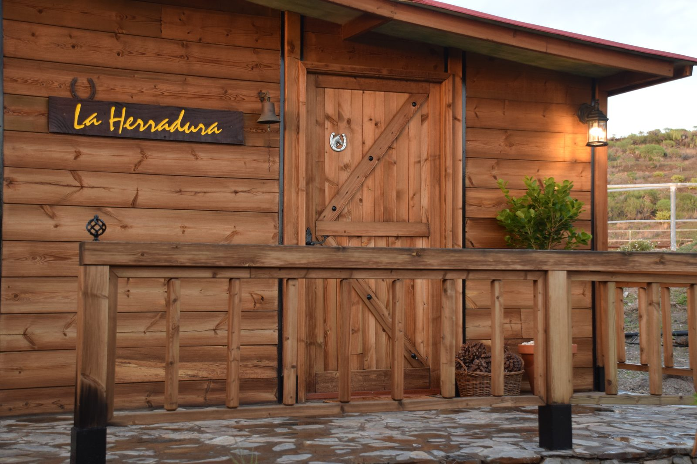
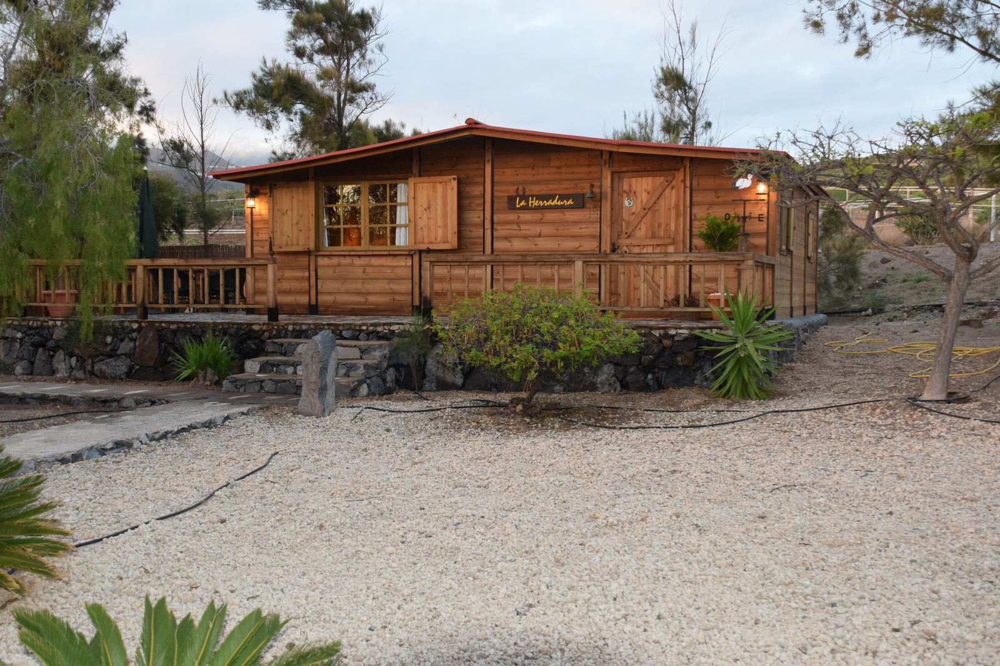
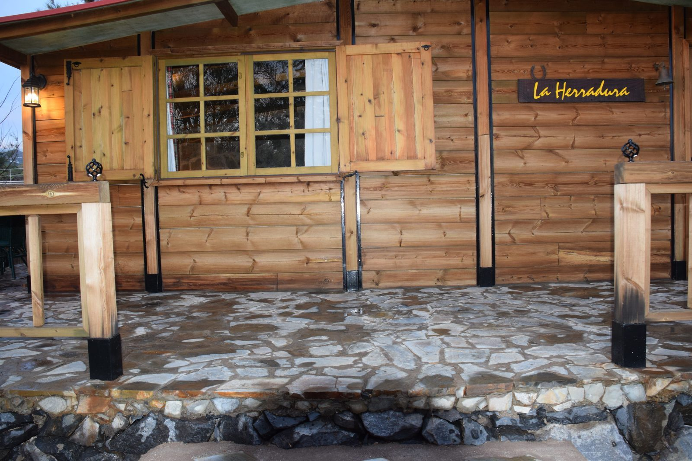
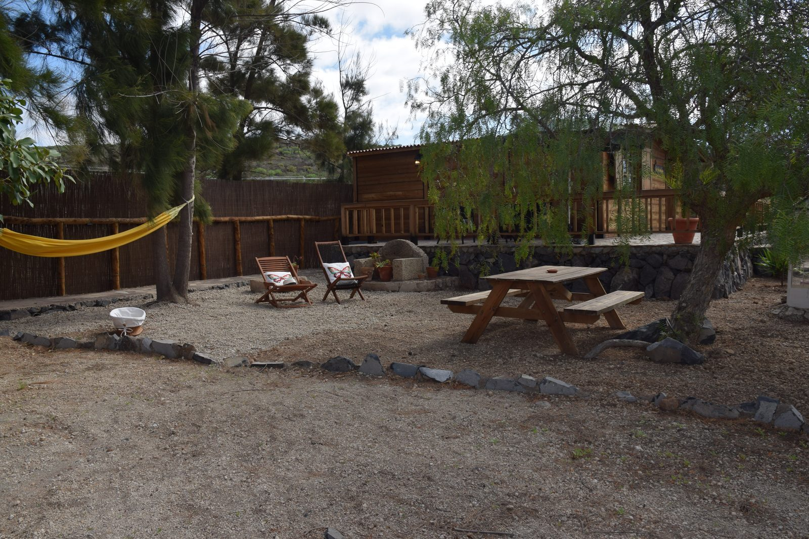
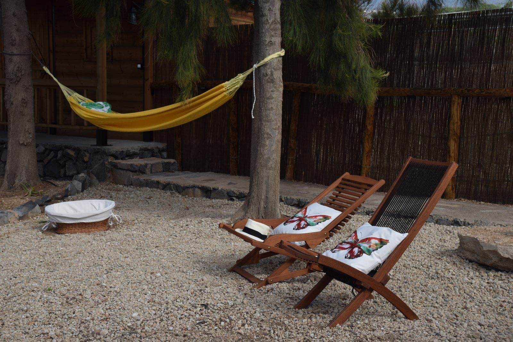
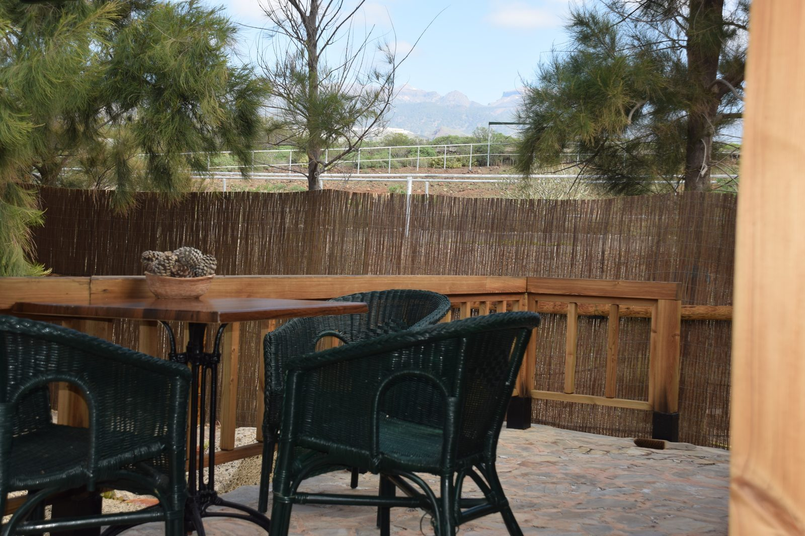

Nella tranquilla campagna di Guia de Isora, a due passi dalla costa ovest di Tenerife e con le montagne alle spalle, la Finca Ciguena e' un piccolo paradiso nascosto. La proprieta' e' avvolta da alberi da frutto — aranci, limoni, fichi, avocado — e strutturata secondo la tradizione architettonica canariana piu' autentica.
Un soggiorno qui significa rallentare, ascoltare il canto degli uccelli al mattino, fare colazione con la frutta del giardino e partire a esplorare sentieri tra i monti e le calette della costa vicina. La semplicita' come forma di lusso.
Escursioni verso Masca e il Barranco, whale watching dalla costa di Los Gigantes, degustazioni di vino locale e immersioni subacquee nelle acque cristalline del sud-ovest.






Per famiglie e coppie in cerca di autenticita', silenzio e contatto con la natura. Un angolo di Tenerife ancora integro, genuino e meravigliosamente lontano dai circuiti di massa.
Contattaci per disponibilita' e prezzi
💬 Contattaci su WhatsApp